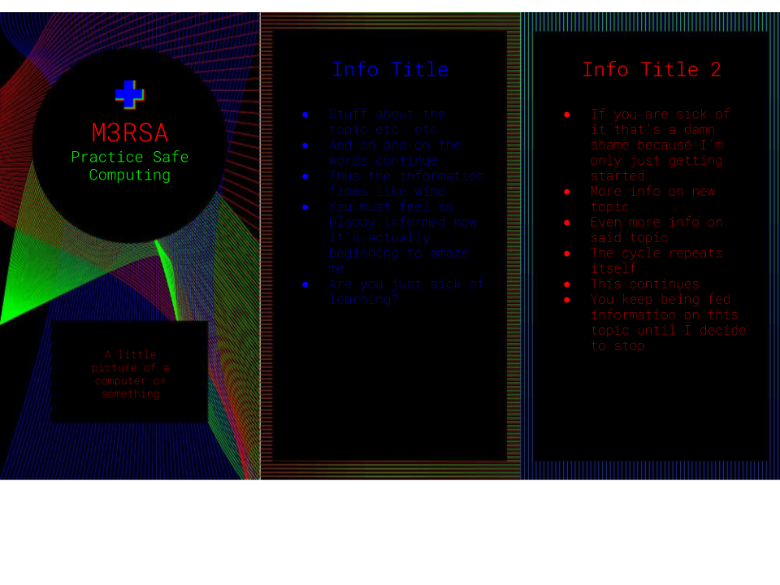
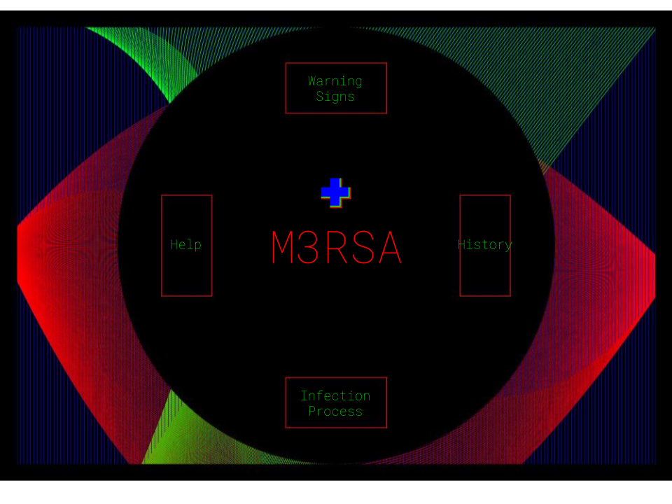
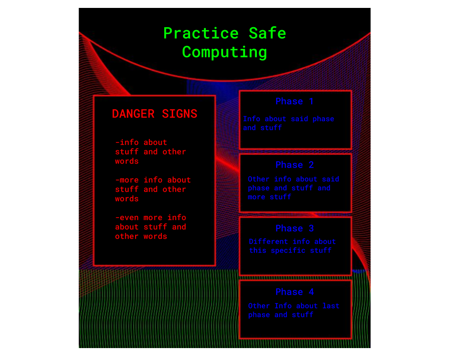

This is my proposed wire frame for a leaflet. There would be another three panels on the back side but seeing as they’d be pretty much the same I didn’t bother to mock them up. I’m thinking this would be similar to the kind of informational leaflet they have at hospitals.
This is my wireframe for the websites homepage. The four boxes would each take you to another page with information on the topic. I didn’t do a wire frame for those because they’d be very simple pages. The word in the center would take you to a page about the initiative. This would definitely be a very basic website as I’d want it to be as easy to understand as possible so it could be very accessible.
This is the proposed wire frame for the poster aspect. The target audience for this campaign is less technologically literate so having physical information visible is key. The audience is also not very likely to seek out the information themselves so having posters where regular people would encounter them is important.
